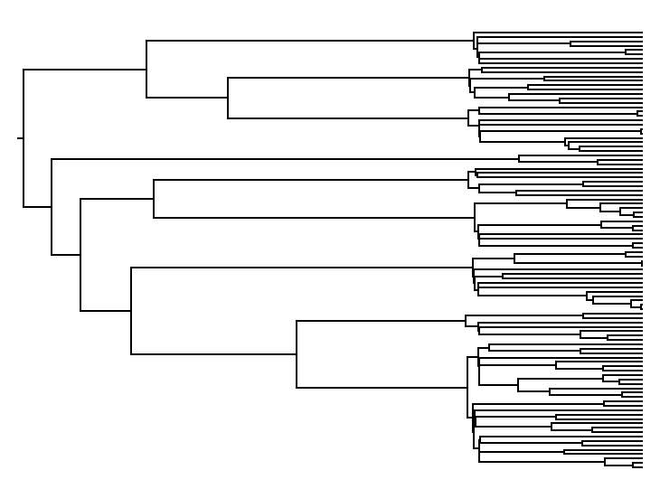

High-fidelity stochastic tree simulation for BEAST 2
GitHub Repository: https://github.com/tgvaughan/remaster
1. Overview
ReMASTER is a flexible tool for simulating trajectories and trees from the birth-death and coalescent models commonly employed in phylodynamic inference, as well as some less common models.
ReMASTER defines birth-death population models using an intuitive "reaction" notation borrowed from chemistry. Using this notation, a simple birth-death process on the number of individuals of type $X$ might be expressed using the following pair of reactions: $$X \overset{\lambda}{\longrightarrow} 2X$$ and $$X \overset{\mu}{\longrightarrow} 0$$ where in each case the elements on the left-hand side of the arrow indicate the individual(s) involved in the reaction (the reactants), and the elements on the right-hand side correspond to the individual(s) remaining after the reaction has fired. The symbol above the arrow represents the rate (probability per unit time) at which the reaction fires for each available combination of reactants.
In order to permit the simulation of reconstructed phylogenies corresponding to subsets of the whole population, ReMASTER allows users to specify that one or more of the model populations are "sample" populations. This means that sampling processes can be explicitly included in the simulation model. For instance, by adding the reaction $$ X \overset{\psi}{\longrightarrow} S$$ where $S$ is defined as a sample population, the birth-death model above becomes the linear birth-death-sampling model which is the basis of much modern phylodynamic inference.
In addition, ReMASTER allows one to define "punctual" reactions which occur at pre-determined times and fire a fixed or stochastic number of times. Besides allowing models to include interesting discrete events, this allows users to pre-specify sample counts and times.
Setting up a birth-death model in ReMASTER involves composing an XML input file describing initial population sizes and the set of reactions governing their dynamics. The input file format is quite readable and concise. For example, the following is a complete XML input file for simulating 100 trees under a the above birth-death sampling model with $\lambda=2$, $\mu=1$ and $\psi=0.1$:
<beast version="2.0" namespace="beast.base.inference:beast.base.inference.parameter:remaster"> <run spec="Simulator" nSims="100"> <simulate spec="SimulatedTree" id="tree"> <trajectory spec="StochasticTrajectory" id="SIRTrajectory" endsWhen="S>=10"> <population spec="RealParameter" id="X" value="1"/> <samplePopulation spec="RealParameter" id="S" value="0"/> <reaction spec="Reaction" rate="2"> X -> 2X </reaction> <reaction spec="Reaction" rate="1"> X -> 0 </reaction> <reaction spec="Reaction" rate="0.1"> X -> S </reaction> </trajectory> </simulate> <logger spec="Logger" fileName="simulated.trees"> <log idref="tree"/> </logger> </run> </beast>
For coalescent tree simulation, ReMASTER uses a similar approach to model
specification but relies on BEAST 2 PopulationFunction objects (such as
ConstantPopulation and ExponentialGrowth) to condition on population
dynamics, together with reactions which are directly applied to coalescent
tree lineages as they evolve backward in time.
ReMASTER is a BEAST 2 package, and integrates well with that platform. Simulated ReMASTER trees can be used directly inside of regular BEAST XML analysis scripts to initialise MCMC states or construct simulation-based validation studies.
1.1. The name
"ReMASTER" is a play on the name of an earlier simulation tool, MASTER. ReMASTER is a completely new implementation which is faster, leaner, and more capable of performing the simulation tasks for which MASTER itself was actually used.
1.2. License
ReMASTER is free software, and is made available under the terms of version 3 of the GNU General Public License, the text of which is available here. The source code for the project can be found at the official GitHub project page: https://github.com/tgvaughan/remaster.
1.3. Citing ReMASTER
If you use ReMASTER as part of research that leads to a publication, please cite the following article:
T. G. Vaughan, "ReMASTER: Improved phylodynamic simulation for BEAST 2.7", Bioinformatics, btae015, 2024. (https://doi.org/10.1093/bioinformatics/btae015)
2. Installation
ReMASTER is a BEAST 2 package. To install it, you'll first need to ensure a recent version of BEAST 2 (version 2.7 or later) is available on your system. If not, go to https://beast2.org and follow the instructions.
Once BEAST 2 is installed, ReMASTER can be installed directly from the standard BEAST 2 package repository. To do this, follow these steps:
- Open BEAUti,
- Open the
Filemenu and selectManage packages. - Select "ReMASTER" from the package list and press the
Install/Upgradebutton.
The ReMASTER package should now be available on your system!
3. Using ReMASTER: General overview
As mentioned in the overview above, the general approach to using ReMASTER is involves (1) model conception, (2) XML input file creation, (3) running BEAST 2 (and hence, ReMASTER) on this input file, and (4) visualising or post-processing the generated output files. This workflow is summarized in the following figure:
The following sections will guide you through the process of defining birth-death and coalescent phylodynamic models, setting up the XML input files which describe them, as well as running the simulations and analysing the results of birth-death and coalescent simulations.
3.1. How to read this manual
While it is organised in a structured way, this manual is designed to be read directly from start to finish. Thus, even if you are only interested in coalescent simulation, please read the Birth-death simulations chapter first—it introduces in detail several key concepts shared by all simulation types.
4. Birth-death simulations
Birth-death simulations are the bread and butter of ReMASTER. Unlike MASTER, ReMASTER is built from the ground up to make simulating birth-death trajectories and trees as easy and flexible as possible.
4.1. Model specification
Like MASTER, ReMASTER defines models in terms of populations and reactions.
4.1.1. Populations
A population in ReMASTER is simply a RealParameter (or other
Function) with a specific ID. The value of the RealParameter is
used as its initial population size in the simulation.
For example, the following defines a population named "X" with an initial size of 10:
<population id="X" spec="RealParameter" value="10"/>
If the RealParameter is a vector, its elements represent subpopulations.
For example, the following population "Y" has two subpopulations initially
occupied by 1 and 10 individuals, respectively:
<population id="Y" spec="RealParameter" value="1 10"/>
Populations may also be marked as "sample" populations by using the appropriate tag:
<samplePopulation id="sample" spec="RealParameter" value="0"/>
For trajectories, sample populations behave just like any other population, besides being forbidden from appearing on the reactant side of a reaction. individuals of these populations take on a special meaning when trees are simulated, however, as the production of a sample corresponds to the creation of a node (internal or external) in the resulting tree.
4.1.2. Reactions
Reactions connect zero or more reactant individuals with zero or more product individuals. The dynamics that ReMASTER simulates are simply the result of applying reactions at random or pre-determined times.
There are two distinct kinds of reactions which can be specified: "continuous" reactions and "punctual" reactions.
4.1.2.1. Continuous reactions
As the name suggests, these reactions are applied continuously throughout the simulation at particular rates which, together with the current state of tye system, determine the reaction probability per unit time for the reaction firing on each of the possible combinations of reactant individuals.
More specifically, a reaction with rate $\lambda$ is related to the overall reaction propensity $\Lambda$ via the following equation: $$\Lambda = \lambda \prod_{i}\binom{N_i}{n_i}$$ where $i$ ranges over all reactant types, $N_i$ represents the total number of individuals of type $i$, and $n_i$ represents the number of reactants of type $i$ required for the reaction.
For users of MASTER: The relationship between rates and propensities is subtly different in ReMASTER compared to MASTER. In MASTER, rates were expressed per ordered sequence of reactants, rather than per combination of reactants. This earlier choice was made for historical reasons, but the relationship above is arguably much more sensible. However, this change means that, for reactions involving more than one reactant of a given type, the MASTER reaction rate constants must be multiplied by a factor of $1/n_i!$ for each type $i$ in order to produce exactly the same results as ReMASTER.
Use the following notation to specify a continuous reaction with a fixed rate (per reactant configuration) in the XML:
<reaction spec="Reaction" rate="2"> S + I -> 2I </reaction>
This reaction takes one $S$ individual and one $I$ individual and replaces them with two individuals of population $I$, and occurs with rate 2 between every compatible pair of individuals. That is, the overall rate at which the reaction occurs in the whole population is $$ (\text{number of $S$ and $I$ pairs}) \times 2 = 2N_SN_I $$ per unit time.
The per-configuration rate of a continuous reaction can change at one or more times. For example, to specify that the rate should change from 2 to 1.4 at time 4, you can write the following:
<reaction spec="Reaction" rate="2 1.4" changeTimes="4"> S + I -> 2I </reaction>
For reactions involving populations with multiple subpopulations, members of those subpopulations can be referenced using square bracket notation. For instance, a birth reaction specific to one of the two subpopulations of population $Y$ defined in the last section could be written:
<reaction spec="Reaction" rate="0.5"> Y[0] -> Y[0] + Y[1] </reaction>
4.1.2.2. Punctual reactions
In contrast, punctual reactions are applied at one or more pre-defined times. At each of these times, a punctual reaction may be applied with some probability to each available combination of reactants (i.e. the number of times the reaction fires is still random) or it may be applied a pre-specified number of times.
To specify a punctual reaction which fires with a particular probability for each available reactant (here 0.5) and at a chosen time (here 10), use the following notation:
<reaction spec="PunctualReaction" p="0.5" times="10"> I -> sample </reaction>
To instead configure the reaction to fire a fixed number of times (say
5), replace the p attribute with a n attribute specifying the
number:
<reaction spec="PunctualReaction" n="5" times="10"> I -> sample </reaction>
Each of p, n and times can take more than one value. For instance,
to specify that the sampling reaction should fire 5 times at time 1.0,
7 times at time 2.0 and 10 times at time 5.0, one could write
<reaction spec="PunctualReaction" n="5 7 10" times="1.0 2.0 5.0"> I -> sample </reaction>
In the case that the number of elements provided to n or p and the
number provided to time do not match, elements of the shorter vector
are reused. Thus one could specify multiple $ρ$-sampling events
each with the same sampling probability of $\rho=0.5$ by writing
<reaction spec="PunctualReaction" p="0.5" times="1.0 2.0 5.0"> I -> sample </reaction>
4.1.2.3. Identifying parents and children
Although the reaction notation is intuitive, on its own it does not specify the parent/child relationships between reactants and products. For example, consider the following reaction representing pathogen transmission in an SIR model:
<reaction spec="Reaction" rate="0.1"> S + I -> 2I </reaction>
The only thing which can be determined from this reaction is that one $S$ and one $I$ individual are replaced by a pair of $I$ individuals. It is completely unclear whether either of the $S$ or $I$ reactants should be regarded as a parent of any of the products.
Specifying these relationships is necessary in order for trees composed of ancestral lineages can be built.
There are two main ways to work around this limitation. Firstly, one can rely on ReMASTER to automatically associate parents with children. By default, ReMASTER assumes that a product individual is considered to be
- the child of the first reactant having the same population type, if one exists, or
- the child the first reactant listed, if one exists, or
- an orphan.
These rules mean that, in the SIR reaction above, the two $I$ product individuals would be regarded as children of the $I$ reactant, and that the $S$ would have no children.
Alternatively, ReMASTER lets you explicitly specify parent-child relationships by appending ":label" tags to reaction elements identifying them as belonging to the same family. If, for instance, we wanted the $S$ reactant to be the parent of the two $I$ products, we could write
<reaction spec="Reaction" rate="0.1"> S:a + I:b -> 2I:a </reaction>
Note that unlike MASTER, ReMASTER requires each child have at most one parent, ensuring that the resulting relationships are tree-like.
4.1.3. Complex model configurations using plates
By composing populations and reactions as defined above you can construct birth-death (and later coalescent) models of very large complexity. However, for models having many distinct types, explicitly describing every possible reaction between these types can become extremely tedious.
For instance, consider a model composed of 5 populations X,Y,Z,W, and V, in which every population has initially 1 individual and each is subject to a birth reaction.
To set this up directly would involve something like the following:
<population id="X" spec="RealParameter" value="1"/> <population id="Y" spec="RealParameter" value="1"/> <population id="Z" spec="RealParameter" value="1"/> <population id="W" spec="RealParameter" value="1"/> <population id="V" spec="RealParameter" value="1"/> <reaction spec="Reaction" rate="1.0"> X -> 2X </reaction> <reaction spec="Reaction" rate="1.0"> Y -> 2Y </reaction> <reaction spec="Reaction" rate="1.0"> Z -> 2Z </reaction> <reaction spec="Reaction" rate="1.0"> W -> 2W </reaction> <reaction spec="Reaction" rate="1.0"> V -> 2V </reaction>
If we also wanted to include reactions involving pairs of different populations, the model specification could easily run to many pages.
Happily, BEAST 2 provides a compact way to express repeated a
repeated fragment of XML: the <plate> element. To use this,
we surround a fragment of XML to repeat as follows:
<plate var="i" range="A,B,C,..."> <!-- fragment to repeat --> </plate>
This causes the body of this element to be repeated a certain number of times,
defined by the number of comma-delimited values in the string passed to the range input.
The var input defines the name of a variable which will be substituted for each
of these values when it appears in the fragment.
Using <plate> notation, our model specification can be written much more simply as
<plate var="pop" range="X,Y,Z,W,V"> <population id="$(pop)" spec="RealParameter" value="1"/> <reaction spec="Reaction" rate="1.0"> $(pop) -> 2$(pop) </reaction> </plate>
We can also nest <plate> elements to create reactions involving multiple populations.
For instance, the following defines migration between each possible pair of populations:
<plate var="source" range="X,Y,Z,W,V"> <plate var="dest" range="X,Y,Z,W,V"> <reaction spec="Reaction" rate="0.5"> $(source) -> $(dest) </reaction> </plate> </plate>
(Note that this will produce some reactions that do nothing, but this is not an issue.)
Besides a comma-delimited list of symbols, range can also take a
sequence notation "start:end" to represent a sequence of integers
between start and end inclusive.
This can be helpful in creating reactions involving many subpopulations:
<population id="X" spec="RealParameter" dimension="100" value="1"/> <plate var="i" range="0:99"> <reaction spec="Reaction" rate="1.0"> X[$(i)] -> 2X[$(i)] </reaction> </plate>
4.2. Trajectory simulation
Trajectories are simply realisations of the population process. There are two distinct types of birth-death trajectories in ReMASTER: stochastic trajectories and deterministic trajectories.
Stochastic trajectories are simulated using a standard Gillespie-style algorithm, and are exact realisations of the continuous-time discrete-state Markov process defined by the reactions. These are the trajectories that you'll want to use to simulate trees under birth-death phylodynamic models.
Deterministic trajectories are simulated by integrating a set of ordinary differential equations corresponding to the reactions. The dynamics generated are essentially the limiting behaviour of the stochastic trajectories when the population sizes are very large and the relative impact of the demographic stochasticity becomes vanishingly small. These are the trajectories you'll want to use to simulate trees under coalescent approximations of birth-death models.
4.2.1. Stochastic Trajectories
Once the population and reaction elements are specified, defining a stochastic trajectory in ReMASTER's XML is very easy.
For example, the following represents a stochastic birth-death-sampling process trajectory with constant rates:
<trajectory spec="StochasticTrajectory" maxTime="10"> <population id="X" spec="RealParameter" value="1"/> <reaction spec="Reaction" rate="1.2"> X -> 2X </reaction> <reaction spec="Reaction" rate="1"> X -> 0 </reaction> </trajectory>
The maxTime attribute specifies the maximum end time of the
simulation. For stochastic trajectories this attribute is actually
optional, since there are many birth-death processes (although not
this one) are guaranteed to terminate in finite amount of time.
(ReMASTER always ceases the simulation once no reactions are able to
fire.)
4.2.2. Deterministic Trajectories
Defining deterministic trajectories is almost exactly the same as defining
a stochastic trajectory. The only difference is that the spec attribute
must be set to "DeterministicTrajectory" and the maxTime attribute is
mandatory.
For example, the following represents an exponentially growing population with rate $\lambda-\mu=1.2-1.0=0.2$:
<trajectory spec="DeterministicTrajectory" maxTime="10"> <population id="X" spec="RealParameter" value="1"/> <reaction spec="Reaction" rate="1.2"> X -> 2X </reaction> <reaction spec="Reaction" rate="1"> X -> 0 </reaction> </trajectory>
Another minor difference is that the endsWhen condition can only
include inequalities, since detecting equality in floating point
numbers can be problematic.
Finally, DeterministicTrajectory accepts two numerical attributes,
forwardRelativeStepSize and backwardRelativeStepSize. These
attributes define the size of the steps taken by the forward-time and
backward-time numerical integrators, respectively, relative to the
total simulation time. Reducing the size of these values increases the
accuracy of the deterministic trajectory calculation and the
associated tree simulation, but makes the calculation more
computationally demanding. The forward-time step size affects the
population size trajectory calculation accuracy, while the
backward-time step size affects only the subsequent tree simulation
accuracy. Leaving these values to their default settings is usually
okay, but smaller step sizes may be necessary to avoid numerical
errors in certain situations. (These sometimes manifest in the form of
"too many lineages remaining" errors.) Models where populations are
changing very quickly are particularly susceptible to such problems.
4.2.3. Placing conditions on trajectories
In addition to the rates and initial population sizes, conditions can be placed on trajectory outcomes so that the simulation finishes when the population sizes reach some specified target or, in the case of stochastic trajectories, the resulting trajectory is only "accepted" when a particular condition is met.
To define an early termination point, provide the endsWhen attribute
to the trajectory element. The value of the attribute should be an expression
predicating which will cause the simulation to end when it becomes true.
For instance
<trajectory spec="StochasticTrajectory" endsWhen="X=100"> ... </trajectory>
defines a trajectory whose simulation will be terminated the instant that the $X$ population contains exactly 100 individuals.
Similarly, to define a condition on the finished simulation, use the
mustHave attribute. For instance,
<trajectory spec="StochasticTrajectory" mustHave="sample>=50"> ... </trajectory>
specifies that the "sample" population must contain at least 50 individuals at the end of the simulation.
The complete syntax for these predicates is specified in section 8.1.
Beware that XML (unfortunately) forbids use of characters such as <
and & in attribute values, so to use them you'll need to use the
escaped versions < and &.
4.2.4. Self-contained trajectory simulation XMLs
While the above XML fragments are sufficient to represent a simulated trajectory, in order to actually be useful
it needs to be embedded in a BEAST XML that produces output. The most direct way to do this is via
ReMASTER's Simulator object, which can be used as a <run> element as follows:
<beast version="2.0" namespace="beast.base.inference:beast.base.inference.parameter:remaster"> <run spec="Simulator" nSims="100"> <simulate id="trajectory" spec="StochasticTrajectory" maxTime="10"> <population id="X" spec="RealParameter" value="1"/> <reaction spec="Reaction" rate="1.2"> X -> 2X </reaction> <reaction spec="Reaction" rate="1"> X -> 0 </reaction> </simulate> <logger fileName="output.traj"> <log idref="trajectory"/> </logger> </run> </beast>
The Simulator takes the following inputs:
- nSims (required)
- an integer specifying the number of independent simulations to perform,
- simulate (required)
- an object representing the simulation, in this case a
StochasticTrajectory, and - logger
- what to record in the output files for each replicate of the simulation. This input can take multiple values, one for each output file. (In this case we only produce one output file, containing a representation of the whole simulated trajectory.)
To run the simulation and produce the output, copy the above XML into a file named something like "BDtraj.xml" and then run it through BEAST, either via the command line:
$ beast BDtraj.xml
or by running BEAST and selecting the "BDtraj.xml" file using the graphical file choose which appears on startup.
This should produce some screen output, together with a file "output.traj" in the same directory containing the simulated trajectories.
4.2.5. Plotting simulated trajectories
The "output.traj" file generated by the previous example is simply a tab-separated-variable (TSV) file containing the size of the population after each event in every replicate trajectory. This file be loaded directly into R for further analysis or for plotting.
From an R session in the same working directory as the simulation results, use the following command to load the trajectories into a data frame:
traj <- read.table("output.traj", header=T)
Alternatively, the read_tsv command from the readr package (Tidyverse) can be used
to load the trajectories into a "tibble", which is often faster for large files:
library(readr) traj <- read_tsv("output.traj")
The resulting data frame has the following layout:
> traj
# A tibble: 7,605 × 5
Sample t population index value
<dbl> <dbl> <chr> <dbl> <dbl>
1 0 0 X 0 1
2 0 0.117 X 0 0
3 1 0 X 0 1
4 1 2.60 X 0 2
5 1 2.99 X 0 1
6 1 3.17 X 0 0
7 2 0 X 0 1
8 2 0.583 X 0 2
9 2 0.840 X 0 1
10 2 0.871 X 0 2
# ℹ 7,595 more rows
Each row specifies the size of a particular population (or subpopulation) at a particular time. The columns are as follows:
- Sample
- A number which indicates to which specific simulated trajectory the results belong.
- t
- The time with which the population size is associated.
- population
- The name (id) of the population.
- index
- An index starting at 0 indicating the subpopulation with which the size is associated. (This column will always be 0 if no subpopulations are defined.)
- value
- The size of the population.
This format is ideal for plotting using ggplot2:
library(ggplot2)
ggplot(traj, aes(t, value, group_by=factor(Sample))) + geom_step(alpha=0.5)
(The group_by=factor(Sample) ensures that population sizes associated with
different trajectories are grouped appropriately.)
Replacing StochasticTrajectory with DeterministicTrajectory in the simulation XML
(and setting nSims="1") produces an output file which, when plotted,
displays the following figure depicting the expected population size dynamics:
(The deterministic model gives the true expected population size dynamics only for linear models.)
4.2.6. Logging stochastic trajectory statistics
In addition to logging full trajectories, you can log basic statistics of simulated trajectories using
the StochasticTrajectoryStatsLogger logger, which can be added using an XML fragment like this:
<logger fileName="traj_stats.log"> <log spec="StochasticTrajectoryStatsLogger" traj="@traj"/> </logger>
This will write things like the total event count and the final population states to columns of the output file. Although all of this information is contained in the full trajectory log, occasionally it is useful to log only a few basic statistics instead - the full trajectory logs can be very big.
(Additional statistics may be added to this logger in future.)
4.3. Tree simulation
Once a trajectory simulation is configured, producing the corresponding trees
is easy. All that is required is to enclose the trajectory element
(DeterministicTrajectory or StochasticTrajectory) in a SimulatedTree element:
<tree spec="SimulatedTree"> <trajectory spec="StochasticTrajectory" maxTime="10"> <population id="X" spec="RealParameter" value="1"/> <samplePopulation id="samp" spec="RealParameter" value="0"/> <reaction spec="Reaction" rate="1.4"> X -> 2X </reaction> <reaction spec="Reaction" rate="0.5"> X -> 0 </reaction> <reaction spec="Reaction" rate="0.5"> X -> samp </reaction> </trajectory> </tree>
The SimulatedTree object takes the following inputs
- trajectory (required)
- a ReMASTER trajectory object.
For trajectories generated using
StochasticTrajectory, trees are exact realisations of the reconstructed phylogeny under the corresponding branching process. For trajectories generated usingDeterministicTrajectory, trees can be considered samples from a diffusion approximation to the branching process. (For details on this kind of approximation, see Volz et al., Genetics, 2012.) - maxRetries (default 10)
- This is the maximum number of times (default 10) that the simulator should attempt to produce a tree, in the event that the first simulated tree does not have exactly one root lineage. (Simulated trees may have more than one root lineage in the instance that not all sampled lineages find a common ancestor before the start of the simulation; a situation common for deterministic trajectories. It can also occur when the initial number of individuals in the sampled population is greater than 1.)
- removeSingletonNodes (default false)
- This can be used to specify that single child nodes representing type changes (if present) should be removed after the simulation is complete. This is sometimes useful if the tree is to be used as the basis or starting point for inference or sequence simulation, as not all BEAST 2 classes know how to handle such nodes.
Note: a SimulatedTree is a special case of the generic BEAST Tree object, and
can be used in BEAST 2 XML files wherever a Tree is expected. In this vein, if
a TaxonSet object is supplied to the optional taxonset input, the leaves of
the simulated tree can be associated with a pre-defined set of taxa. This can
be useful when using SimulatedTree to initialise an MCMC analysis of an existing
data set, as demonstrated in the YuleInferenceInitialisation.xml example.
4.3.1. Self-contained tree simulation XMLs
A self-contained tree simulation XML is very similar to a self-contained trajectory
simulation XML. The only differences are that tree simulation XMLs have a SimulatedTree
object for the <simulate> element, and generally have a logger which writes the
simulated trees to a file.
For example, here is a full XML description of a tree simulator which produces trees sampled from a linear birth-death-sampling model and saves them to a file named "output.trees":
<beast version="2.0" namespace="beast.base.inference:beast.base.inference.parameter:remaster"> <run spec="Simulator" nSims="1"> <simulate id="tree" spec="SimulatedTree"> <trajectory id="trajectory" spec="StochasticTrajectory" maxTime="10"> <population id="X" spec="RealParameter" value="1"/> <samplePopulation id="samp" spec="RealParameter" value="0"/> <reaction spec="Reaction" rate="1.4"> X -> 2X </reaction> <reaction spec="Reaction" rate="0.5"> X -> 0 </reaction> <reaction spec="Reaction" rate="0.5"> X -> samp </reaction> </trajectory> </simulate> <logger fileName="output.traj"> <log idref="trajectory"/> </logger> <logger fileName="output.trees"> <log idref="tree"/> </logger> </run> </beast>
Note that in this example we have left the trajectory logger in place,
so in fact this XML produces both output.traj and output.tree
files.
Loading the tree file in a phylogenetic tree viewer such as icytree, FigTree or into R using ggtree allows you to view the result:
4.3.2. Logging typed trees
The example model in the previous section contained only one main population type (besides the sample population). However, many interesting models involve multiple types and result in trees whose edges are associated with different populations. The standard BEAST tree logger used in the previous example will not record this information in its output file.
In order to include this information so that it can be shown on the tree,
you'll need to use the TypedTreeLogger in place of the standard logger:
<beast version="2.0" namespace="beast.base.inference:beast.base.inference.parameter:remaster"> <run spec="Simulator" nSims="1"> <simulate id="tree" spec="SimulatedTree"> <trajectory id="trajectory" spec="StochasticTrajectory" maxTime="10"> <population id="X" spec="RealParameter" value="1"/> <population id="Y" spec="RealParameter" value="0"/> <samplePopulation id="samp" spec="RealParameter" value="0"/> <reaction spec="Reaction" rate="1.4"> X -> 2X </reaction> <reaction spec="Reaction" rate="0.1"> X -> Y </reaction> <reaction spec="Reaction" rate="0.5"> X -> 0 </reaction> <reaction spec="Reaction" rate="0.5"> Y -> samp </reaction> </trajectory> </simulate> <logger fileName="output.trees" mode="tree"> <log spec="TypedTreeLogger" tree="@tree"/> </logger> </run> </beast>
Loading the resulting tree file into icytree and colouring the edges using the "type" attribute produces a visualisation in which the tree edges are labeled by their corresponding population types:
4.3.3. Logging untyped trees
Occasionally you really do want to log trees without any additional
type annotation. With single-population models this can be achieved
as shown in 4.3.1. However,
multi-population models (or models with sub-populations) often produce
trees with internal nodes representing type changes. These nodes will
appear in the output trees, even when the edge types are not recorded.
This can also produce problems when using ReMASTER SimulatedTree objects
to initialise standard BEAST MCMC analyses, as the extra nodes will not
be properly understood.
To log output trees with these nodes removed, use TypedTreeLogger as in the previous
section, but add the attribute removeSingletonNodes="true". This
will produce a tree in which the internal degree 3 nodes (one parent
two children) are still annotated, but in which degree 2 nodes (one
parent one child) are removed. Such trees are fully compatible with
the rest of BEAST.
Alternatively, as mentioned at the start of this section, one can add
the same attribute removeSingletonNodes="true" to the
SimulatedTree element, causing these nodes to be stripped from the
simulated tree itself. One can then use the standard tree logger as
in 4.3.1. This allows one to use the
simulated tree directly to initialise an MCMC analysis or to simulate
sequences, but has the drawback that the original multi-type tree is
lost.
4.3.4. Logging trees with variable numbers of leaves
Many stochastic models produce trees containing a random number of leaves. Ensembles of trees containing different numbers of leaves are written to BEAST tree files can cause downstream problems, as such files explicitly assume the number of leaves is the same for all trees they contain.
To circumvent this problem, one can use TypedTreeLogger as above
but with the attribute noLabels="true" added.
5. Coalescent simulations
While birth-death simulations (both exact and approximate) are the prime focus of ReMASTER, it is also possible to perform a variety of coalescent simulations.
5.1. Model specification
Like birth-death model specifications, coalescent model specifications
are composed of <population/> and <reaction/> elements. However,
Coalescent model specification differs from the specification of
birth-death models in three important ways.
Firstly, time increases into the past and thus represents age before the "present".
Secondly, instead of allowing population dynamics to be a realisation
of a stochastic process, coalescent models operate under the
assumption that the effective population sizes and how they vary in time are
known at the outset. Pairs of tree lineages associated with these populations
coalesce at a rate $1/N_e(t)$ where $N_e(t)$ is the effective population size
at time $t$. (Note that in ReMASTER and BEAST 2 in general,
"effective population size" is simply the inverse
pairwise coalescent rate, and therefore has units of "time".)
For this reason, <population/> elements are associated with BEAST 2 PopulationFunction objects
rather than regular Function objects. For instance, the following element
introduces a constant-size population with $N_e(t)=10$:
<population id="pop" spec="ConstantPopulation" popSize="10"/>
(Like population elements in birth-death models, these population
elements must be marked with an id attribute.)
Thirdly, <reaction/> elements are interpreted "backward in time" and
apply directly to sampled phylogenetic tree lineages. Because of
this, there is no concept of a "sampled" population or lineage. As
usual though, reactions can be either continuous or punctual. They're
useful for two main things: creating new lineages (i.e. samples/tips)
and transitioning lineages between populations (e.g. migration events
in structured coalescent models). For instance, the following punctual
reaction generates 10 lineages associated with the population "pop" at
time 0:
<reaction spec="PunctualReaction" n="10" times="0"> 0 -> pop </reaction>
Alternatively,
<reaction spec="Reaction" rate="100 0" changeTimes="1"> 0 -> pop </reaction>
generates leaves at a fixed rate between time 0 and time 1. (Note that rate of leaf generation explicitly changes from 1 to 0 at time 1 to avoid generating infinite numbers of leaves.) For the chosen rate, an average of 100 leaves will be generated by this second reaction, as it describes a simple Poisson process.
5.1.1. Vector-valued coalescent Reaction inputs
As with all reactions, the n, times, rate and changeTimes inputs can be
given multiple values. In the context of coalescent models, this is
useful for specifying large numbers of leaves at different times, or
for allowing lineage migration rates to change in a piecewise-constant
way.
For example,
<reaction spec="PunctualReaction" n="5" times="0 1 2 3"> 0 -> pop </reaction>
produces 5 tips at each of the times 0, 1, 2, and 3; i.e. 20 leaf nodes in total.
5.1.2. Parents and children in coalescent reactions
Since coalescent reactions are applied to lineages backward in time, the meaning of parents and children is reversed.
For instance, in reaction
<reaction spec="Reaction" rate="1"> S -> L </reaction>
(which might appear in a structured coalescent model)
applies to all lineages currently associated with the S population. The
"parent" in this reaction is the product L, while the child is the reactant S.
Note that, despite the switch in direction, coalescent reactions follow the same rules as birth-death reactions for assigning parents to children. The ":id" suffix can be applied to both reactant and product to force a parent-child relationship where the default assignment is not correct.
5.2. Trajectory simulation
While there's no real concept of a population-level trajectory simulation in the context
of a coalescent model that conditions on population dynamics, ReMASTER still
requires that you wrap your coalescent model specification in a CoalescentTrajectory
object, which is analogous to the birth-death trajectory objects.
For example, the CoalescentTrajectory object in the following XML
represents a two-deme structured coalescent model in which one of the
populations is growing exponentially toward the present:
<beast version="2.0" namespace="beast.base.inference:beast.base.inference.parameter:remaster :beast.base.evolution.tree.coalescent"> <run spec="Simulator" nSims="1"> <simulate id="traj" spec="CoalescentTrajectory" maxTrajLogAge="10"> <population id="C" spec="ConstantPopulation" popSize="10.0"/> <population id="E" spec="ExponentialGrowth" popSize="100.0" growthRate="1"/> <reaction spec="Reaction" rate="0.1"> C -> E </reaction> <reaction spec="PunctualReaction" n="50" times="0">0 -> C</reaction> <reaction spec="PunctualReaction" n="50" times="0">0 -> E</reaction> </simulate > <logger fileName="output.traj" log="@traj"/> </run> </beast>
Important: Note the addition of ":beast.base.evolution.tree.coalescent" to the
namespace attribute. This is necessary to avoid errors due to BEAST not being
able to find the ConstantPopulation and ExponentialGrowth classes, which are
part of BEAST 2 itself, not ReMASTER.
When coalescent trajectories are logged, as in the above example, the
output is simply a set of regularly-spaced samples of the effective
population size on which the model is conditioned. (The maximum time
recorded is fixed by the value of the optional maxTrajLogAge
attribute of CoalescentTrajectory, which here is set to 10. The sampling
frequency can be set using another optional attribute, loggingGridSize, but
defaults to 101 samples.)
For example, loading the trajectory file generated by the above XML into R and plotting it yields:
read_tsv("output.traj") %>% ggplot(aes(t, value, col=population)) + geom_line()
Because the population size dynamics are fixed, reactions described by
<reaction> elements have no effect on this output.
5.3. Tree simulation
As for birth-death models, we can simulate trees by wrapping the CoalescentTrajectory
object in a SimulatedTree:
<beast version="2.0" namespace="beast.base.inference:beast.base.inference.parameter:remaster :beast.base.evolution.tree.coalescent"> <run spec="Simulator" nSims="1"> <simulate id="tree" spec="SimulatedTree"> <trajectory id="traj" spec="CoalescentTrajectory" maxTrajLogAge="10"> <population id="C" spec="ConstantPopulation" popSize="10.0"/> <population id="E" spec="ExponentialGrowth" popSize="100.0" growthRate="1"/> <reaction spec="Reaction" rate="0.5"> C -> E </reaction> <reaction spec="PunctualReaction" n="50" times="0">0 -> C</reaction> <reaction spec="PunctualReaction" n="50" times="0">0 -> E</reaction> </trajectory > </simulate> <logger fileName="output.tree" mode="tree"> <log spec="TypedTreeLogger" tree="@tree"/> </logger> </run> </beast>
In the generated tree we see how the continuous reaction enables
one-way migration from C to E, while the two punctual reactions
produce 50 tips in each of the two populations at time zero:
5.4. More complex coalescent models
The kinds of population dynamics which can be expressed in ReMASTER is dictated
by the kinds of PopulationFunction classes which are available. In BEAST itself,
only ConstantPopulation and ExponentialGrowth are provided, which limits the
utility of the simulator.
One approach to producing more complex scenarios is to use the CompoundPopulationModel
class available in the feast package to combine these BEAST's primitive population
models in piecewise fashion.
For instance, the following XML simulates trees under a population model with a strong population bottleneck between times 5 and 5.1, and an eventual exponential decline into the past (growth into the future):
<beast version="2.0" namespace="beast.base.inference.parameter:remaster :beast.base.evolution.tree.coalescent :feast.popmodels"> <run spec="Simulator" nSims="1"> <simulate id="tree" spec="SimulatedTree"> <trajectory id="traj" spec="CoalescentTrajectory" maxTrajLogAge="10" trajLogSampleCount="1000"> <population id="pop" spec="CompoundPopulationModel" changeTimes="2.0 2.2 3.0"> <populationModel spec="ConstantPopulation" popSize="100.0"/> <populationModel spec="ConstantPopulation" popSize="1.0"/> <populationModel spec="ConstantPopulation" popSize="100.0"/> <populationModel spec="ExponentialGrowth" popSize="100.0" growthRate="1"/> </population> <reaction spec="PunctualReaction" n="100" times="0">0 -> pop</reaction> </trajectory> </simulate> <logger fileName="output.trees" mode="tree"> <log spec="TypedTreeLogger" tree="@tree"/> </logger> <logger fileName="output.traj" log="@traj"/> </run> </beast>
Plotting the trajectory yields a visualisation of the compound model:
read_tsv("output.traj") %>% ggplot(aes(t,value,col=population)) + geom_line()
The following is an example output tree: 
Keep in mind that complex coalescent scenarios are sometimes better
treated using the diffusion-limit birth-death approximation framework
provided by DeterministicTrajectory.
6. Integrating with BEAST
Unlike MASTER, ReMASTER is tightly integrated with the rest of BEAST in the following ways:
- trees are standard BEAST
Treeobjects, - it uses standard
Loggerobjects to produce output, - it uses
RealParameterorFunctionobjects to define birth-death populations, - it uses
PopulationFunctionobjects to define coalescent populations, - the inputs defining reaction rates, times, probabilities or numbers
expect generic
Functioninputs.
This means that it is possible to use ReMASTER to initialise MCMC chains, to simulate sequence data, or to produce single-XML simulation studies which combine both simulation and inference.
Furthermore, the copious use of Function input types means that one can use
the Function-specific objects from the feast package to create simulation XMLs
in which parameters are transformed in moderately complex ways before being
applied to the simulation.
For instance, suppose one wishes to simulate a trajectory under an epidemiological model defined by a basic reproductive number $R=\lambda/\mu$ instead of a birth rate. One can easily do this as follows:
<beast version="2.0" namespace="beast.base.inference:remaster"> <param id="R" spec="RealParameter" value="1.5"/> <param id="mu" spec="RealParameter" value="1.0"/> <param id="lambda" spec="feast.expressions.ExpCalculator" value="R*mu"> <arg idref="R"/> <arg idref="mu"/> </param> <run spec="Simulator" nSims="1"> <simulate id="trajectory" spec="StochasticTrajectory" maxTime="10"> <population id="X" spec="RealParameter" value="1"/> <reaction spec="Reaction" rate="@lambda"> X -> 2X </reaction> <reaction spec="Reaction" rate="@mu"> X -> 0 </reaction> </simulate> <logger fileName="output.traj"> <log idref="trajectory"/> </logger> </run> </beast>
Alternatively, suppose you wish to simulate coalescent trees having
200 leaves evenly spaced over a period of 0.5 time units. This can be
done by supplying a feast.function.Sequence object (feast
documentation here), which generates a Function representing a
sequence of evenly spaced numbers, to the times input of the
corresponding PunctualReaction:
<beast version="2.0" namespace="beast.base.inference.parameter:remaster :beast.base.evolution.tree.coalescent"> <run spec="Simulator" nSims="100"> <simulate id="tree" spec="SimulatedTree"> <trajectory id="traj" spec="CoalescentTrajectory"> <population id="pop" spec="ConstantPopulation" popSize="1.0"/> <reaction spec="PunctualReaction" n="1"> <times spec="feast.function.Sequence" start="0" stop="0.5" length="200"/> 0 -> pop </reaction> </trajectory> </simulate> <logger fileName="$(filebase).trees" mode="tree"> <log spec="TypedTreeLogger" tree="@tree"/> </logger> </run> </beast>
7. Examples
The examples/ directory of the package repository contains a growing list of example
ReMASTER scripts. These are installed alongside the package when you install it via BEAUti.
You can also access these example scripts directly via the GitHub repository for the
package: https://github.com/tgvaughan/remaster/tree/master/examples.
Note: Some of these examples also require the BEAST 2 package feast to be installed.
This can be installed directly using the package manager in BEAUti in the same way that
you installed ReMASTER.
Here is a list of the example scripts contained in that directory, together with brief summaries of the simulations they perform:
BDcontemp.xml- Simulates birth-death trajectories and trees conditioned on having 5 contemporaneous samples at time 5, and 5 more at time 6.
BDserial.xml- Simulates birth-death-sampling trajectories and trees.
Coalescent.xml- Simulates coalescent trees with 10 leaves under a constant effective population size of 1.0.
ComplexCoalescent.xml(requires feast)- Simulates coalescent trees under a more complex (piecewise constant and exponential) population model. Also writes .traj file summarizing the deterministic population dynamics.
HetCoalescent.xml(requires feast)- Demonstrates simulation of heterochronus coalescent trees using three distinct leaf sampling strategies: continuous leaf sampling over a time interval, even distribution of leaf times over an interval, and sampling of a fixed number of leaf times from a uniform distribution over a particular interval.
CoalescentInferenceTree.xml- Simple self-contained coalescent inference simulation study XML. Uses ReMASTER to simulate a tree under a coalescent model with a true constant population size of 2.0, then uses BEAST to infer the population size from that tree.
CoalescentInferenceAlignment.xml(requires feast)- A more complex self-contained coalescent inference simulation study XML. Uses Remaster to simulate a tree under a coalescent model with a true constant population size of 2.0. Sequence evolution is then simulated down the tree using the sequence simulator from the feast package under a Jukes-Cantor model with strict clock rate of 0.05 substitutions/site/time. Finally, the XML runs a BEAST MCMC analysis to jointly infer the tree, clock rate and population size from the simulated sequence data.
StructuredCoalescent.xml- Simple 2-deme structured coalescent simulation with constant population sizes and contemporaneously-sampled leaves.
StructuredCoalescentExp.xml- Simple 2-deme structured coalescent simulation with one constant and one exponentially growing population, having 1000 contemporaneously-sampled leaves.
EpiBD.xml(requires feast)- Simple birth-death-sampling simulation parameterized in terms of epidemiological parameters: basic reproductive number (R0), becoming-uninfectious rate and sampling proportion, as defined in Stadler et al., 2013.
SIR.xml- Simulates stochastic Susceptible-Infectious-Removed (SIR) trajectories.
SIRdet.xml- Produces a trajectory file containing the numerically-integrated solution to the deterministic SIR ODEs. (In this case, the ODEs are treated as an approximation to the stochastic process.) This example also demonstrates the use of an end condition to terminate the numerical integration.
SEIR_tree.xml- Simulates a tree under the stochastic Susceptible-Exposed-Infectious-Removed (SEIR) model, under a continuous sampling process which only activates after 5 time units.
SEIRdet_tree.xml- Simulates a tree using a coalescent approximation to the stochastic Susceptible-Exposed-Infectious-Removed (SEIR) model with an explicit termination condition and punctual sampling reactions.
SimulatedBDAlignment.xml(requires feast)- Simulates a tree under a birth-death-sampling model, then simulates sequence evolution under a basic Jukes-Cantor substitution model to produce a corresponding simulated alignment.
YuleInferenceInitialisation.xml- Demonstrates the use of a ReMASTER birth-death tree simulation to initilise the state of an MCMC analysis of primate sequences.
8. Appendix
8.1. Condition syntax
The expressions provided to endsWhen and mustHave conform to the following
grammar:
expression :
'(' expression ')'
| (SUM|MIN|MAX) '(' expression ')'
| expression ('*'|'/'|'%') expression
| expression ('+'|'-') expression
| expression ('=='|'!='|'<'|'>'|'<='|'>=') expression
| expression ('&&'|'||') expression
| POP_ID
| NUMBER
;
Here SUM(), MIN() and MAX() are functions which take a population vector and compute the sum, minimum, or maximum, respectively.
POP_ID is any population ID such as "X" or "I[0]".
Beware when assembling these instructions that XML rules must be
obeyed. In particular, you must use XML entities for characters such
as & and >, so that instead of writing "X>2 && Y>10" you must
instead write "X>2 && Y>10".
Relevant characters and their corresponding XML entities are as follows
| Character | Entity |
|---|---|
| > | > |
| < | < |
| & | & |